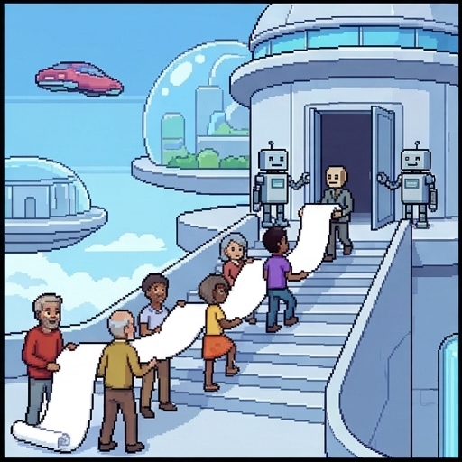
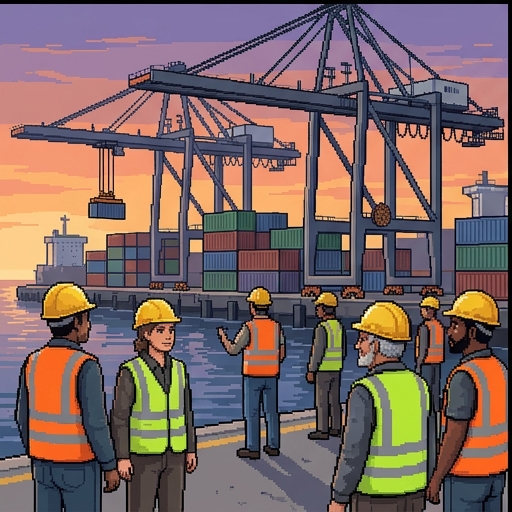
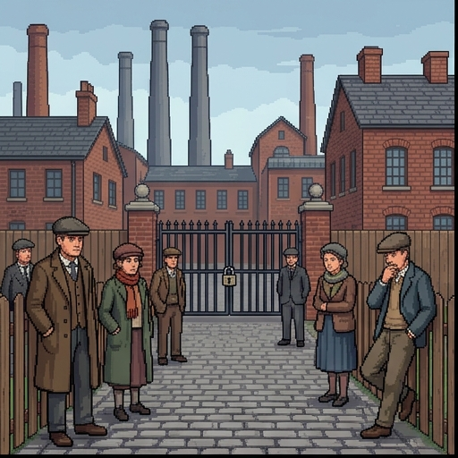
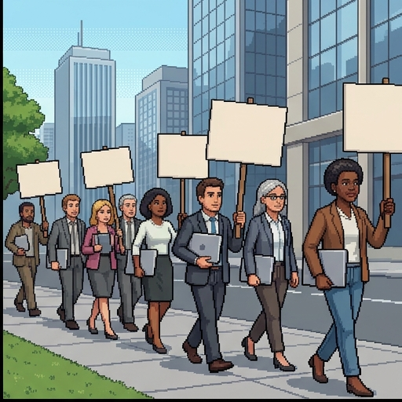
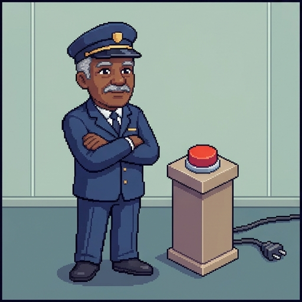
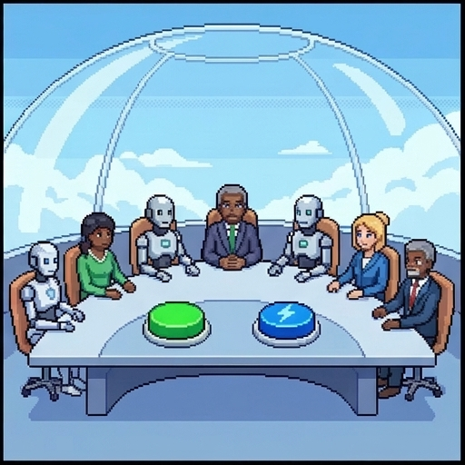
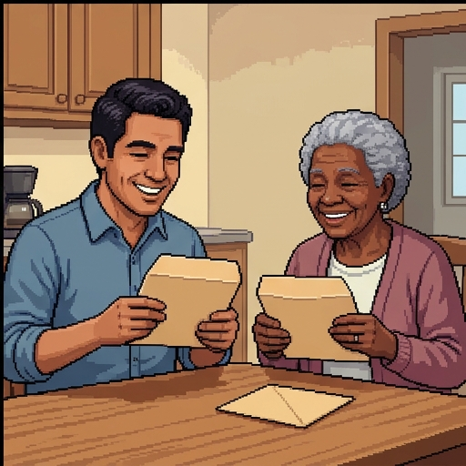

The Last Job
Hammock Heights, 2150. Robots do every job, and do it better. You are UNIT-9, the town's Bureau of Employment robot, and you have no jobs left to hand out.
This morning a petition lands on your desk. The residents want a right to work. Your job, such as it is, is to work out what that could mean, and whether they have one.
Use → (or Next) to advance and reveal points. F = fullscreen.
Hammock Heights, in the year 2150. Robots do every job, and do it better. You are UNIT-9, the town's Bureau of Employment robot, and you have no jobs left to hand out. This morning, a petition lands on your desk. The residents want a right to work. Your job, such as it is, is to work out what that could mean, and whether they have one. Whenever it's your turn, I'll stop and wait for you.
Where You Stand Now
Rate each statement. There are no right answers, and you'll rate them again at the end.
Everyone who wants to work should be able to find a job.
Work is one of the most important parts of a good life.
If robots could do all the work, people would be better off not working.
People who choose not to work should still get enough money to live on.
A government should create jobs for people, even if a machine could do the job better.
Before we start, tell me where you stand. Rate each of these five statements. There are no right answers, and you'll rate them again at the end. Press Submit when you're done.
Saved. Now, meet the people who signed the petition.
Meet the Residents
Everyone in Hammock Heights gets a share of what the robots produce. Nobody is poor. Four residents stop by your desk.
Everyone in Hammock Heights gets a share of what the robots produce. Nobody is poor. Four residents stop by your desk.
- Ines spent forty years welding bridges. The welding robots are faster and never miss a seam. She misses being good at something.
- Priya is sixteen and has never had a job. Everyone asks what she'll be when she grows up. She has no idea, and isn't sure she minds.
- Dex surfs the floating wave pool all day and says he has never been happier.
- Felix is the last human employee in town: the Official Button Presser. The button isn't connected to anything.

Three Rights in One Phrase
The petition asks for "a right to work." That phrase can mean three different things.
The petition asks for a right to work. That phrase can mean three different things.
- A right to look for work. Nobody may stop you from seeking or taking a job. Others only have to stay out of the way. That is a negative right.
- A right to a job. Someone must give you work if you can't find any. That is a positive right, so someone has to provide it.
- A right to meaningful work. Not just any job, but work that is worth doing.
- The UN's 1948 Universal Declaration of Human Rights lists "the right to work, to free choice of employment." (US "right-to-work" laws are about union dues.)

Is It Coming?
Hammock Heights is a thought experiment. Here is where our world actually stands.
Hammock Heights is a thought experiment. Here's where our world actually stands.
- In 2024 the International Monetary Fund estimated that about 40% of jobs worldwide are exposed to AI: AI could do or change some of their tasks.
- Exposed doesn't mean replaced. In many jobs, AI may help workers rather than take over.
- There are early signs. A Stanford study, updated in 2026, found young workers in the most AI-exposed jobs falling behind their peers, mostly because fewer are hired.
- So far, researchers find no economy-wide wave of job losses. Hammock Heights asks: what if it went all the way?
Which Right?
A right to look for work
A right to a job
A right to meaningful work
"No law may stop a woman from taking a welding job she's offered."
"No law may stop someone from seeking work in the trade she chooses."
"If a man can't find work, the town must give him a job."
"When robots take every job, the government owes people paid positions."
"Being handed a job isn't enough. A button that does nothing doesn't count."
"Everyone is owed work that's worth doing, not just any job."
Which of the three rights does each claim describe? Sort them, then press Check answers.
Right. The rest of this lesson is about the third one, because that's the one robots put in doubt.

Paid to Do Nothing
Felix gets the same monthly share as everyone else, plus a small wage for pressing the button. "It gets me out of bed," he says.
Researchers studied Marienthal, an Austrian village whose factory had closed. Most families didn't rebel. They grew resigned, and the structure of their days fell apart. Studies since then find that losing work harms well-being, not just income.
Work gives people more than a paycheck. So what, exactly?
In Hammock Heights, Felix gets the same monthly share as everyone else, plus a small wage for pressing the button. It gets me out of bed, he says. In our world, in 1933, researchers studied Marienthal, an Austrian village whose factory had closed. Most families didn't rebel. They grew resigned, and the structure of their days fell apart. Studies since then find that losing work harms well-being, not just income. Work gives people more than a paycheck. So what, exactly?
Work offers goods money can't buy, and justice requires fair chances at them.
The Goods of Work
The philosophers Anca Gheaus and Lisa Herzog list four goods of work besides money. For most people today, a job is the main place to find them.
The philosophers Anca Gheaus and Lisa Herzog list four goods of work, besides money. For most people today, a job is the main place to find them.
- Excellence: developing your skills and accomplishing something with them.
- Social contribution: doing something your society needs.
- Community: doing things together with others, as equals, in a shared project.
- Social recognition: being recognized and valued by others for what you do.
Try It: A Week With No Jobs
Your turn. You're helping a resident plan a week. There are no jobs left, only these activities. Pick four, and watch which goods of work the week provides. Try a few different weeks, and notice which goods are hardest to fill. When you're ready, press Continue.
A society built around labor, freed from labor, may be left with nothing.
Two Warnings
Two philosophers warned about a world without work.
- John Rawls called self-respect "perhaps the most important primary good": one of the goods every person needs, whatever else they want.
- Later he warned that lacking security and the chance of meaningful work destroys self-respect, and people's sense that they are members of society, "not simply caught in it."
- Hannah Arendt (1958) worried about "a society of laborers without labor": people whose lives centered on their jobs, with the jobs taken away.
- Both suggest that money alone can't replace what work gives people.
Which Good?
Excellence
Social contribution
Community
Social recognition
After years of practice, a welder lays a seam with no flaws at all.
A bus driver knows thousands of people get to work because of her.
A garbage collector keeps a whole neighborhood clean and healthy.
A night-shift crew covers for each other and shares birthday cake.
When she says she's an ICU nurse, people's faces light up with respect.
Which good of work does each example show most clearly: excellence, social contribution, community, or social recognition? Sort them, then press Check answers.
Right. Now, does anyone have a right to these goods?

Not a Hobby
Ines asks UNIT-9 for real work. "A hobby is something nobody needs," she says. "I want to be needed."
Hollywood screenwriters struck for 148 days. Their new contract said AI can't write or rewrite scripts, and studios can't make writers use it.
Part of what they fought for was the work itself.
In Hammock Heights, Ines asks UNIT-9 for real work. A hobby is something nobody needs, she says. I want to be needed. In our world, in 2023, Hollywood screenwriters struck for a hundred and forty-eight days. Their new contract said AI can't write or rewrite scripts, and studios can't make writers use it. Part of what they fought for was the work itself.
Work that leaves no room for judgment undermines people as autonomous agents.
The Case for: Autonomy
The first case for a right to meaningful work starts from autonomy.
- The philosopher Adina Schwartz (1982) starts from autonomy: running your own life by your own plans and judgment.
- Routine jobs leave almost no room to set aims or choose means. Years of such work, she argues, make people less able to plan their own lives.
- So a society that respects everyone as an autonomous agent must not confine anyone to such mindless jobs.
- On this view, a job like Felix's button is not enough, whatever it pays.
Meaningful work is central to flourishing, though no one has a right to it.
The Case for: Flourishing
The second case is about flourishing, and it comes with a twist.
- The philosopher Andrea Veltman (2016) draws on Aristotle: a good human life means developing your capacities and using them.
- Meaningful work, she argues, is central to human flourishing. It exercises your abilities, serves a purpose, and connects to the rest of your life.
- But Veltman stops short of a right. The state can't create meaningful work and match each person to it, and some bad work can't be avoided.
- So the flourishing case shows why meaningful work matters, without settling who owes it to whom.
The Case For, Checked
Schwartz argues that respecting autonomy means no one should be confined to mindless, routine jobs.
Veltman argues that meaningful work is central to a flourishing life.
Rawls warned that lacking security and the chance of meaningful work destroys self-respect.
Veltman argues that everyone has a right to meaningful work.
Schwartz argues that any paid job meets the standard of meaningful work.
Arendt hoped for a society of laborers freed from labor.
Which of these statements are true, as this lesson presents them? Check every one that is, then press Check answers.
Right. Now for the other side.
Happy Doing Nothing
Dex surfs the floating wave all day. He has no job and doesn't want one. "I've never been happier," he says.
The economist John Maynard Keynes guessed that his grandchildren's generation might work about fifteen hours a week. Their "permanent problem," he wrote, would be how to occupy their leisure "to live wisely and agreeably and well."
Is a life without work a loss, or a prize?
In Hammock Heights, Dex surfs the floating wave all day. He has no job, and doesn't want one. I've never been happier, he says. In our world, in 1930, the economist John Maynard Keynes guessed that his grandchildren's generation might work about fifteen hours a week. Their permanent problem, he wrote, would be how to occupy their leisure, to live wisely and agreeably and well. So is a life without work a loss, or a prize?
Guaranteeing meaningful work unfairly favors one good over others.
The Case Against: Neutrality
The first case against is about neutrality.
- Some people love their work. Others, like Dex, would rather spend their time on other things.
- The philosopher Richard Arneson (1987) argued that a right to meaningful work "arbitrarily privileges" one good, job satisfaction, over others like more pay or more free time.
- So a fair state stays neutral. People can pursue meaningful work, more money, or more leisure, as they choose.
- Arneson later changed course: by 2009 he thought justice could require meaningful work for everyone. His 1987 argument still has many defenders.
Less work, wisely used, would make people happier.
The Case Against: Post-Work
The second case against says we'd be better off without work.
- Bertrand Russell (1932) praised idleness: "the road to happiness and prosperity lies in an organized diminution of work." He wanted a four-hour working day for everyone.
- John Danaher (2019) goes further: "work is bad for most people most of the time." Bosses dominate, jobs are insecure, and work takes over our time.
- On Danaher's view, the goods of work can be found elsewhere: in games, play, and community.
- So, on his view, the task is to build good lives without jobs, not to keep jobs alive.

The Case Against: It Can't Be Provided
The third case against says the right can't be provided.
- A right to a job is a positive right, so someone must provide the jobs. Even the UN committee on economic rights says the right to work is not "an absolute and unconditional right to obtain employment."
- And if robots do every task better, the only jobs anyone could provide are make-work: work that exists only to keep someone busy.
- David Graeber called it a "bullshit job": paid work so pointless that even the employee can't justify it. Felix's button is one.
- People can tell. Cordasco and Véliz (2025) argue that holding back AI to save jobs can't protect workers' self-esteem: they'd know a policy props their jobs up.
Which Objection?
Neutrality
Post-work
It can't be provided
"The state shouldn't rank a working life above a life of surfing."
"Some people would trade job satisfaction for more pay or free time. The state shouldn't favor one choice."
"Most jobs were never that good. Let the robots have them."
"We can find mastery and friendship in games and clubs, without any jobs."
"A right to a job means someone must provide the jobs. Who?"
"With robots doing everything better, the only jobs the town could hand out are make-work."
Which objection does each speaker raise: neutrality, post-work, or it can't be provided? Sort them, then press Check answers.
Right. So, does the right exist?
Decision Point: Is There a Right?
Yes. Without meaningful work, people lose autonomy and self-respect, so everyone is owed a chance at it.
Only a right to look for work, not to be given it.
No. She's owed the means to live well, and can choose whether to work.
No. Work was a burden, and a world without it is better.
Priya asks UNIT-9 straight out: do I have a right to meaningful work? What do you answer? This one isn't graded. Pick the answer closest to your view, and read its note.
The case for rests on autonomy and self-respect. The case against says a fair state shouldn't pick a working life for everyone. Next: what should a town actually do?

Pay Everyone, or Hire Everyone?
The town council has two buttons. The green one pays everyone a basic income, no questions asked. The blue one offers everyone a job.
Small versions of both have been tested. Finland paid 2,000 unemployed people a monthly basic income for two years. In one Austrian village, every long-term unemployed person was offered a job from 2020 to 2024.
UNIT-9 has to recommend one.
In Hammock Heights, the town council has two buttons. The green one pays everyone a basic income, no questions asked. The blue one offers everyone a job. In our world, small versions of both have been tested. Finland paid two thousand unemployed people a monthly basic income for two years. And in one Austrian village, every long-term unemployed person was offered a job from 2020 to 2024. UNIT-9 has to recommend one.
Real freedom for all requires an unconditional basic income.
Pay Everyone: Basic Income
The green button is a basic income.
- A universal basic income is a regular payment to everyone, with no work required.
- The philosopher Philippe Van Parijs defends it. His 1991 paper is titled "Why Surfers Should Be Fed."
- His reason is real freedom: everyone should have the means to live the life they choose, including a life without paid work.
- In a US study, 1,000 people got $1,000 a month for three years. On average they worked one to two hours less a week, and leisure grew more than any other use of their time.
Those who share in what a society produces should do their part.
The Surfer Objection
Not everyone thinks surfers should be fed.
- John Rawls had already said no (1988): "those who surf all day off Malibu must find a way to support themselves and would not be entitled to public funds."
- The philosopher Stuart White calls the idea fair reciprocity: if you share in what a society produces, you should contribute in return. "Everyone should do their bit."
- But in Hammock Heights, robots produce almost everything. Whose work would Dex be living off?
- White's reply: contribution can mean more than a paid job. Care work and other service to the community count too.

Hire Everyone, or Something Between
The blue button, and something in between.
- A job guarantee: the government offers paid work to anyone who wants it. It answers Rawls, but someone has to make the jobs worth doing.
- Marienthal, the village from the 1933 study, tried one from 2020 to 2024. An early evaluation found long-term unemployment nearly vanished, and participants gained structure and purpose.
- A participation income: the economist Tony Atkinson (1996) proposed paying people who contribute, counting care, volunteering, and study, not just paid jobs.
- It answers White's reciprocity worry without requiring a job that robots could do better.
Which Policy?
Basic income
Job guarantee
Participation income
Every resident gets a monthly payment, with no conditions at all.
A full-time surfer gets the same payment as everyone else, no questions asked.
The town offers a paid job to anyone who asks for one.
Anyone out of work can go to town hall and be given a paid job.
You get the payment if you care for others, volunteer, study, or work.
A full-time caregiver qualifies for the payment, but a full-time surfer doesn't.
Which policy does each rule describe: basic income, a job guarantee, or a participation income? Sort them, then press Check answers.
Right. Now it's time for UNIT-9's recommendation.
Decision Point: UNIT-9 Recommends
The green button: a basic income for everyone.
The blue button: a job for everyone who wants one.
Neither: a participation income.
Both: a basic income, plus a job for anyone who wants one.
The council asks UNIT-9 for a recommendation. Which button should it press? This one isn't graded. Pick the answer closest to your view, and read its note.
Each answer is a bet about what people need besides money. There's no button for that.
Where You Stand Now
These are your ratings from the start. Rate each statement again.
These are your ratings from the start. Rate each statement again, then press Submit. If something moved, ask yourself what moved it.
Thank you.
Summed Up
Here's the lesson, summed up.
- Three rights: to look for work, to be given a job, or to have meaningful work.
- The goods of work: excellence, contribution, community, and recognition. Rawls and Arendt warned what losing them could cost.
- For and against: autonomy and flourishing, against neutrality, the post-work hope, and the worry that it can't be provided.
- The policy choice: pay everyone, hire everyone, or pay those who contribute.
UNIT-9 files its report and goes back to having nothing to do.
For Further Reading
If you'd like to go further, here are some good places to start, each with a note on why it's worth your time. Thanks for playing.
- Michael Cholbi, “Philosophical Approaches to Work and Labor,” Stanford Encyclopedia of Philosophy (2022). A free survey of the goods of work, meaningful work, the right to work, and post-work debates.
- Anca Gheaus and Lisa Herzog, “The Goods of Work (Other Than Money!),” Journal of Social Philosophy 47, no. 1 (2016): 70–89. The four goods, and why they matter for justice.
- John Danaher, Automation and Utopia: Human Flourishing in a World without Work (Harvard University Press, 2019). The post-work case, made carefully.
- Philippe Van Parijs, “Why Surfers Should Be Fed: The Liberal Case for an Unconditional Basic Income,” Philosophy & Public Affairs 20, no. 2 (1991): 101–131. The surfer argument, in its own words.
- Bertrand Russell, “In Praise of Idleness,” Harper's Magazine (October 1932). A short, funny essay against the work ethic.
About this lesson. Brendan Shea, PhD, wrote this lesson with help from AI tools. Claude (Anthropic) helped draft the text and code and check facts, and the illustrations were made with AI image generators. The narrator's voice is synthetic (Google Gemini text-to-speech). The author reviewed everything and is responsible for any errors.